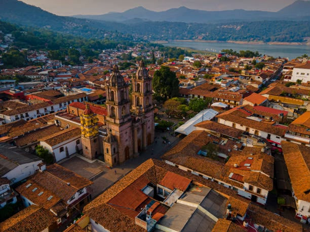

BELLEZA NATURAL
"Hay atardeceres que pintan el paisaje de tonos dorados y refleja en el lago la calma que tanto buscamos"
Valle de Bravo
Valle de Bravo es el escape perfecto del estado de mexico:
Un pueblo magico que combina arquitectura colonial de calles empedradas y tejas rojas.
Lago ideal para deportes acuaticos, y bosques de pino que resguardan la cascada velo de novia.
Es el destino definitivo para desconectar en una cabaña frente a la fogata, comer cecina vallesana o vivir la adrenalina de volar en parapente desde monte alto.
Los platillos imperdibles de la region son la cecina vallesana, la trucha arcoiris (preparada de distintas formas) en los restaurantes locales, Los esquites con camaron en la plaza principal, el pan de pulque y los licores artesanales de frutas.

La peña
En Valle Bravo existe un gigante de priedra que resguarda el lago:
Este imponente peñasco no solo ofrece la mejor vista de 360 grados del pueblo magico.
Esconde siglos de misterio, antiguo templo sagrado de los Matlazincas y hogar de leyendas sobre tesoros ocultos en la cueba de el diablo.
Subir sus senderos es conectar directamente con la energia de la montaña. Si visitas Valle, llegar a la cima a el atardecer no es negociable.
El viento en la cara y el sol reflejado en el agua te recordara lo que es sentir la verdadera livertad.

Velo de novia
El secreto mejor guardado entre los bosques de Avandaro:
Adentrarse en el bosque para buscar la cascada Velo de Novia es una experiencia puramente sensorial.
La aventura comienza en un sendero rodeado de pinos y helechos gigantes donde el aire se vuelve frio y el aroma a tierra mojada lo inunda todo preparandote para el eco de la naturaleza.
Al llegar,te recibe una espectacular caida de agua cristalina de 35 metros de altura que desciende por la roca como un velo blanco y perfecto.
Sentarte en la orilla,escuchar su fuerza y sentir la brisa en el rostro es el plan definitivo en Valle de Bravo para apagar el ruido de la ciudad y recuperar la paz mental.